Introduction
Logs are a good place to look for issues when you want to optimize your database. When using PostgreSQL, we can use pgbadger to make it easier. pgbadger is an open-source application that parses PostgreSQL logs and generates detailed reports with graphs.
In this article, I am going to explain my setup to download log files from an AWS RDS instance and generate daily reports.
Setup RDS to log events
Create a parameter group
For our logs to be informative, we will have to change some parameters in the configuration of our PostgreSQL instance. When we create an instance on RDS, it comes with a set of default parameters that we cannot modify. To use our custom settings, we need to create a new parameter group.
On the RDS page, click on Parameter groups in the left menu.
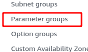
Then click the Create parameter group button.
Fill the form as follow:
- Select group family. It should be the same as your instance.
- Select Type. Select DB Parameter Group.
- Enter a meaningful Group name.
- Enter a description (optional). We can add some more details describing this parameter group.
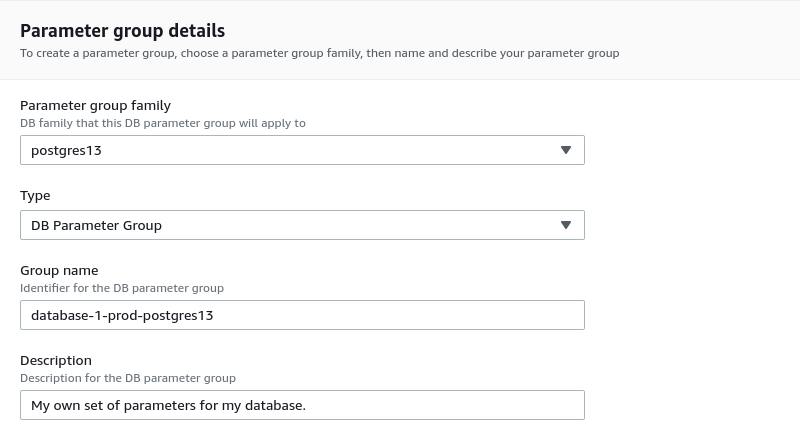
Then click Create.
The parameter group should appear in the list:
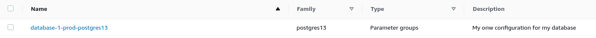
Edit the parameters
We can now set our own values for the database configuration. Open the parameter group and click Edit parameters
To find the parameter we want to change, we can type its name in the filter box. Once we get the parameter, we can change the value in the Value column:
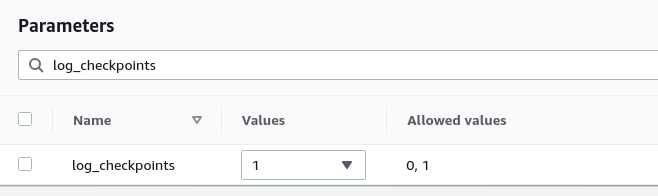
We repeat the operation for all the parameters we need to modify. Below are the values we need to set to have effective logging. They come from the pgbadger documentation.
log_checkpoints = on
log_connections = on
log_disconnections = on
log_lock_waits = on
log_temp_files = 0
log_autovacuum_min_duration = 0
log_error_verbosity = default
log_statement = off
lc_messages='C'
log_min_duration_statement=1000
log_min_duration_statement is in ms. There is no right or wrong value. It all depends on our use case. If we set it to 0, the system will log all the queries. When this option is set, the system will also log the SQL statement. If we don't need it and just want to log the query duration, we can disable this parameter by setting its value to -1. Set the time value for log_duration instead.
It can be interesting to know what queries have an execution time that is too high, so I'll keep the log_min_duration_statement. In my example, I will log all the queries that take more than 1s to run.
Once we set all our parameters, we can preview the changes
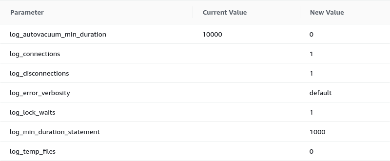
Click Save changes if everything is ok.
Apply the new parameters to the database
Our parameter group is ready. We need to assign it to our database instance.
We go back to the databases page, select the instance we want to apply changes to, and click the Modify button.
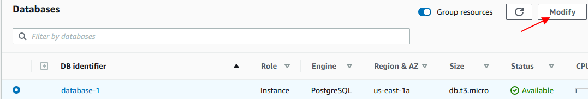
We then scroll down to the Additional configuration section and under Database options select the parameter group we want to use.
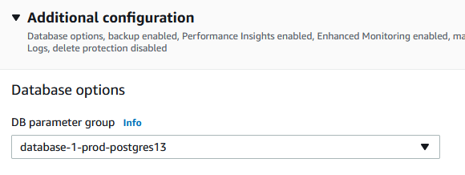
Click Continue
Choose when you want to apply the changes. Click on Modify DB instance
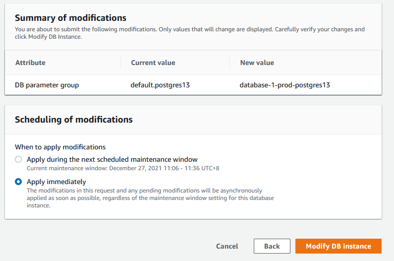
Create a new user
Before we leave the AWS console, we need to create a user. For the AWS command-line tool to work, we need to save a user's credentials. For security reasons, we are not going to use the root account or a user with admin privileges. Instead, we are going to create a user who is only allowed to download the log files. If our machine gets compromised, the consequences will be minimal.
Go to the IAM page and click Add users button
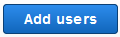
-
Set the user name
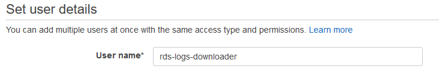 -
Select credentials. We only need access key
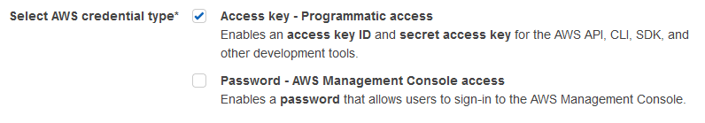 -
Select Attach existing policies
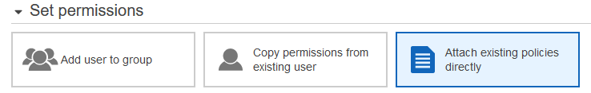 -
Click Create Policy
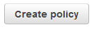
{
"Version": "2012-10-17",
"Statement": [
{
"Effect": "Allow",
"Action": "rds:DownloadDBLogFilePortion",
"Resource": "arn:aws:rds:us-east-1:123456789012:db:database-1",
}
]
}
The Effect and Action attributes must have those values.
We can specify the Amazon Resource Name of our database to limit the permission to that database only. If we want to grant permission to all databases, we would type "Resource": "arn:aws:rds:us-east-1:<account_id>:db:*".
To increase security, we can also limit the permissions to a specific IP address. By adding a Condition bloc in the statement, I allow this use to download log files from a specific IP only.
{
"Version": "2012-10-17",
"Statement": [
{
"Effect": "Allow",
"Action": "rds:DownloadDBLogFilePortion",
"Resource": "arn:aws:rds:us-east-1:123456789012:db:database-1",
"Condition": {
"IpAddress": {
"aws:SourceIp": "111.222.333.444"
}
}
}
]
}
The next screen is for adding tags. We can skip this step.
The last screen is for reviewing the policy. Add a name and a description then click on Create Policy
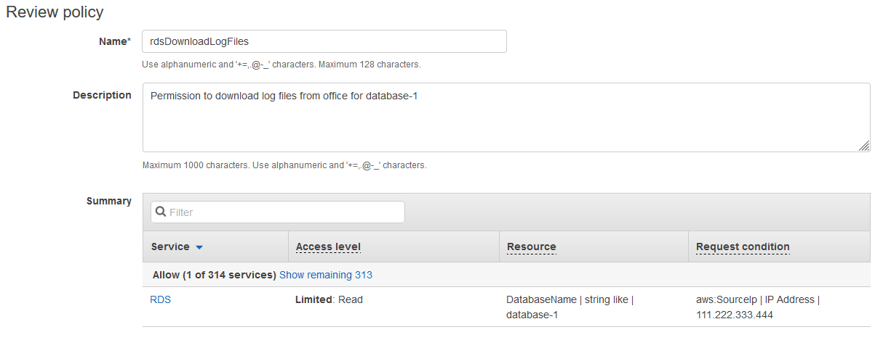
Back in the user creation screen, click the refresh button. The new policy will appear in the list. Select it and continue the user creation process
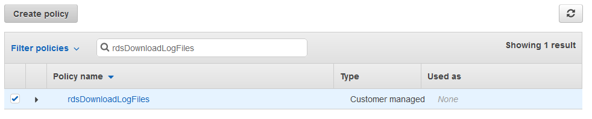
In the last screen, review the user data. Click Create User if everything is ok.
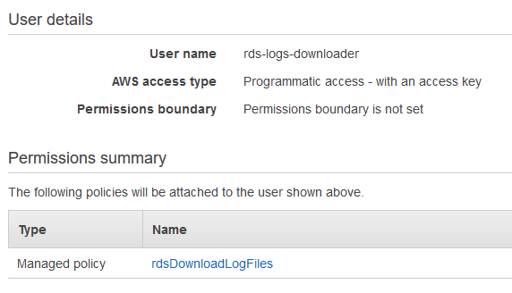
We arrive at the credentials page. This is the only time AWS will show us those credentials. It is important to save them in a safe place like a password manager.
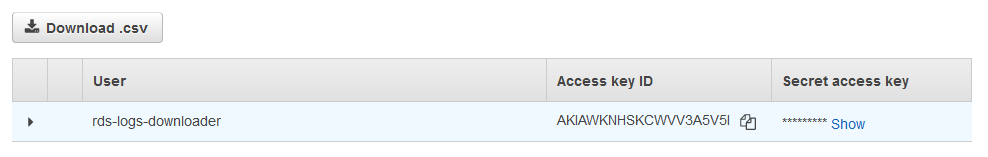
Download the log files
We can download the files from our local machine using the AWS command-line tool. In this section, I will explain how to install the tool and how to use the command to download the log files.
Install aws-cli tools
I am running Debian. I can install the AES client from the official repository. Then I run the aws configure command to set the access key.
$ sudo apt update && sudo apt install awscli
$ aws configure
AWS Access Key ID [None]: <access_key_id>
AWS Secret Access Key [None]: <secret_access_key>
Default region name [None]: us-east-1
Default output format [None]:
The configure commands creates two files in a .aws directory:
~/
|_ .aws
|_ config
|_ credentials
The config file contains the default region:
[default]
region = us-east-1
The credentials file contains the access key data:
[default]
aws_access_key_id = <access_key_id>
aws_secret_access_key = <secret_access_key>
Those files can be edited manually to update the information or create other profiles.
There are more instructions on how to install the latest version of the tool or how to create named profiles on AWS website.
Download log files
To download log files, we need to run the download-db-log-file-portion command. Here is an example:
$ aws rds download-db-log-file-portion \
--db-instance-identifier database-1 \
--log-file-name error/postgresql.log.2021-12-14-02 \
--starting-token 0 \
--output text > /path/to/logs/postgresql.log.2021-12-14-02
Where the options are:
- --db-instance-identifier: This is the name of the DB instance we want to download the log files from.
- --log-file-name: The name of the log file to download.
- --starting-token 0: The starting-token option is used for paginating. We need to set it to 0 to download the entire file.
- --output: We save the output to a file.
In this example, we are downloading a log file for our database-1 instance. We are asking for the log file of December 14th, 2021 at 2 AM UTC. The output will be saved as plain text to a file called postgresql.log.2021-12-14-02.
Generate reports with pgbadger
Install pgbadger
There is a pg badger package in the Debian repository. At the time of writing it is at version 10.3 which is behind the latest version available from the Github repository.
$ apt show pgbadger | grep Version
Version: 10.3-2
We can install this version by simply running the apt install -y pgbadger.
To install the latest version, download the tarball from the releases page, then run the following commands:
$ tar xzf pgbadger-11.x.tar.gz
$ cd pgbadger-11.x/
$ perl Makefile.PL
$ make && sudo make install
Generate a report from a log file
To generate a report from a given log file, we run the following command:
$ pgbadger -f stderr -o /path/to/report.html -p '%t:%r:%u@%d:[%p]:' /path/to/logs/postgresql.log.2021-12-14-02
Where the options are:
- -f, --format: specify the format of the logs. pgbadger should be able to autodetect the format, but it may fail to do so. The possible values are syslog, syslog2, stderr, jsonlog, csv, and pgbouncer.
- -o, --outfile: defines the name of the file where the report is saved. If not specified, the report is created as out.html.
- -p, --prefix: the value of the custom log_line prefix as defined in postgresql.conf. Use it if not using the standard prefix. When downloading from AWS RDS, we need to use %t:%r:%u@%d:[%p]: unless we changed the prefix in the instance settings.
If there is more than one database running on the instance, we can specify what database we want the report for by adding the -d <database_name> option.
Some common options are:
- -d: database name
- -o output file
- -O: output directory
- -Z: timezone in number of hours from GMT (+/-XX)
Automate this
As always, we don't want to spend time every day doing something that could be automated. The added value is in analyzing the report and optimizing the database. So we're going to create a script that downloads the logs of the previous day and generates a report. Then we'll create a cron job to run the script every morning. When we get to work, the report will be ready.
Create a script
The script will take two parameters: the instance identifier and the date of the logs we want. We will have the cron job generate the previous day's date. This way, we still can run the script manually to generate the report of any day we want (given that the files are still available in RDS).
Let's say we'll call our script rds-logs-report. To execute it we would have to type ./rds-logs-report <instance_id> <date>.
We first save the parameters in an instance and a logdate variables.
instance=$1
logdate=$2
We also set the base directory where the logs will be downloaded and the reports saved. Then we create a directory for the downloads and one for the reports. Inside those directories, each instance will have its folder.
# Setup a directory where the logs and reports will be saved
basedir=/path/to/logs/dir
# Directory where the log files are downloaded
logdir="${basedir}/logs/${instance}"
mkdir -p $logdir
if [ $? -ne 0 ]; then
echo "Failed to create ${logdir}"
exit 1
fi
# Directory where the reports are saved
reportdir="${basedir}/reports/${instance}"
mkdir -p $reportdir
if [ $? -ne 0 ]; then
echo "Failed to create ${reportdir}"
exit 1
fi
We are now ready to download the log files. There is one file per hour with a suffix going from 00 to 23. We are going to iterate through the names of the files and append the output to a single log file for the day. To do so, we add the --output text >> $logdir/$logfile option to the download-db-log-file-portion command.
for h in $(seq 0 23)
do
if [ ${#h} -eq 1 ]
then
h="0${h}"
fi
logportion="error/postgresql.log.${logdate}-${h}"
echo "Downloading ${logportion}"
aws rds download-db-log-file-portion \
--db-instance-identifier $instance \
--log-file-name $logportion \
--starting-token 0 \
--output text >> $logdir/$logfile
done
We now have all our logs saved in one file. We just have to use pgbadger to generate the report.
pgbadger \
-f stderr \
-p "%t:%r:%u@%d:[%p]:" \
-o "${reportdir}/logs-report-${logdate}.html" \
$logdir/$logfile
Once we are done, we can archive the log file in a tarball and delete the file to save space on our disk:
tar -czf "${logdir}/${logfile}.tar.gz" $logdir/$logfile
rm $logdir/$logfile
We're done. The report is saved in /path/to/logs/dir/reports/instance_id/logs-report-log_date.html.
You can find the entire script here.
Create a cron job
Now that we have a script that downloads the files and generates the reports automatically, we can create a cron job that runs it every day.
The date --date="yesterday" +\%Y-\%m-\%d instruction will output the date of the previous day.
In the following exemple, I run the scripts every morning at 8:10 Tuesday to Saturday to generate the report from the previous day logs.
10 8 * * 2-6 /path/to/rds-logs-report <instance_id> `date --date="yesterday" +\%Y-\%m-\%d`
Conclusion
We're all set. Every morning, there will be a report waiting for us. I didn't go through the report in this article because it was out of scope, but there is a post from severalnines that describes the different sections.